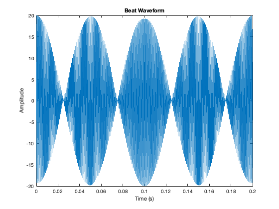
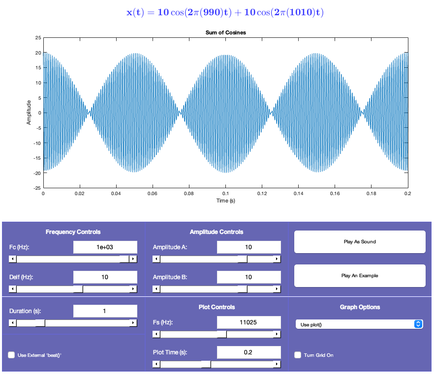
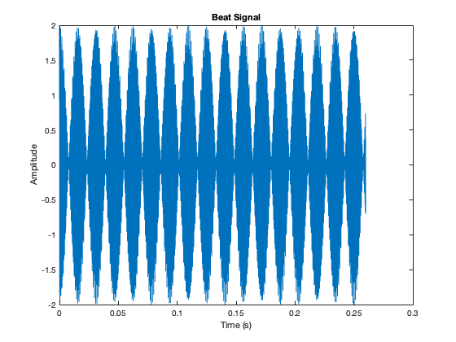
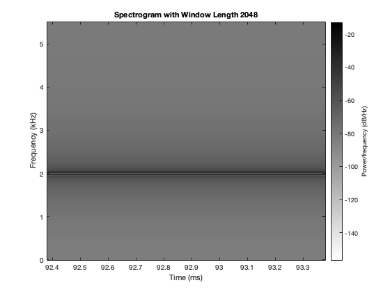
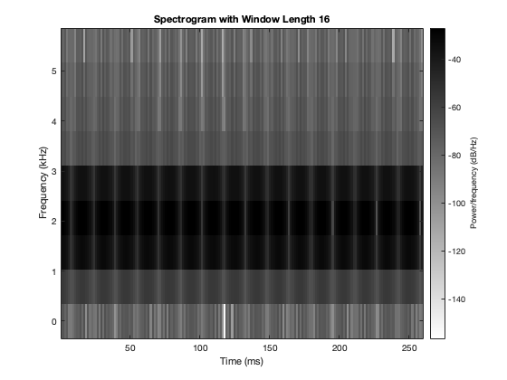
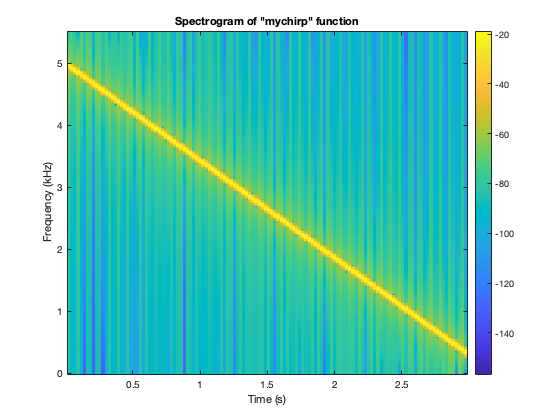
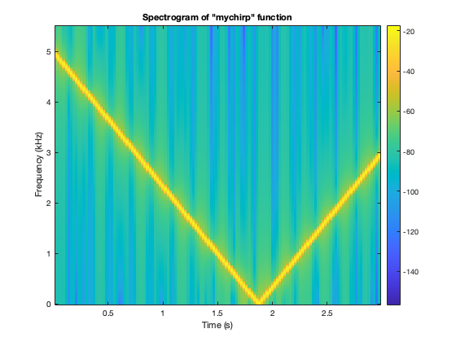

Contents
4 Lab Exercise: Chirps and Beats
close all;
Introduction
In this lab, we explore the synthesis and analysis of beat notes and chirps signals commonly used in communication and signal processing. The goal is to create amplitude-modulated (AM) and frequency-modulated (FM) signals and study their frequency characteristics using spectrograms, which show how frequency content changes over time. First, we generate beat notes by summing two sinusoidal signals with slightly different frequencies, creating a pattern of amplitude fluctuations. This exercise helps us understand the relationship between time and frequency domains. Then, we use spectrograms to analyze the frequency content of signals, examining the trade-off between time and frequency resolution by varying window lengths. Finally, we study the spectrogram of a chirp signal to observe its continuous frequency sweep over time. This lab provides practical experience in signal synthesis and time-frequency analysis.
4.1 Beat Notes
(a). In the section on beat notes, we analyze the situation in which we have two sinusoidal signals of slightly different frequencies; i.e. x(t) = A cos[2π(f_c - f_Δ)t] + B cos[2π(f_c + f_Δ)t]
function [xx, tt] = beats(A, B, fc, delf, fsamp, dur) %BEAT generates samples of the sum of two cosine waves % usage: % [xx, tt] = beat(A, B, fc, delf, fsamp, dur) % where: % A = amplitude of lower frequency cosine % B = amplitude of higher frequency cosine % fc = center frequency % delf = frequency difference % fsamp = sampling rate in Hz % dur = total time duration in seconds % Output: % xx = output vector of samples % tt = time vector corresponding to xx tt = 0:1/fsamp:dur; % time vector x1 = A * cos(2 * pi * (fc - delf) * tt); x2 = B * cos(2 * pi * (fc + delf) * tt); xx = x1 + x2; % soundsc(xx,fsamp); end A = 10; B = 10; fc = 1000; delf = 10; fsamp = 11025; dur = 1; [xx, tt] = beats(A, B, fc, delf, fsamp, dur); % Plot the first 0.2 seconds figure(1) plot(tt(1:round(0.2*fsamp)), xx(1:round(0.2*fsamp))); xlabel('Time (s)'); ylabel('Amplitude'); title('Beat Waveform');
(b). The waveform plotted below is the beat waveform, which is the sum of two sinusoidal signals with slightly different frequencies.
- The waveform has amplitude with peaks (envelopes) rising and falling over time.
- The slow oscillation (envelope) represents the beat frequency, which results from the interaction of two close frequencies.
- The fast oscillations within the envelope represent the high-frequency carrier signal.
- Using the inputs: A = 10 B = 10 fc = 1000 delf = 10 fsamp = 11025 dur = 1
Beat Contol Panel v2.4y / EE2200 / April 23 , 1995
Craig Ulmer / No modifications or sales without author's approval
grimace@ee.gatech.edu / ulmer@eedsp.gatech.edu / gt7667a@prism.gatech.edu
Purpose : beatcon.m is a scipt that creates a GUI that manipulates values plugged into the user defined "beat.m" function. It allows output to be plotted or played through the audio speaker, as well as give an example for what beat notes sound like. Plots can be saved to postscript files.
beat.m file: Looks like function x = beat(a_amp,b_amp,freq_center,freq_dis,fs,time)
Required Files: beatcon.m -- Bootstrap beatconbin.m -- Actual Source
Changes since v2.3 : New interface(Again!) Program rewritten as a function rather than as script. This causes problems with some compilation, which is why this bootstrap program is necessary. Lot more solid menu options - such as save/load, and multiple print options.
Possible problems: The uimenu options gave a lot of errors as I built them. In particular, a system hang/segmentation error when selecting one of the menus. Can't isolate the problem due to low frequency, and Mathworks offers no help.
As usual, Send the complaints to grimace@ee.gatech.edu
if (exist('beat.m') ~= 2) unix('echo ''function y=beat(a,b,c,d,e,f,g);'' >beat.m'); end;
- Amplitude Envelope: The amplitude of the waveform oscillates between 20 and -20 due to the constructive and destructive interference of the two cosine waves over time.
- Period: The time between two peaks in the envelope is the reciprocal of the beat frequency: T_beat = 1/f_beat=1/20=0.05 seconds
- Sound: If you play this waveform, you will hear the beat frequency (20Hz) as a pulsation in the sound, modulating the steady tone of the 1000 Hz carrier.
eval('beatconb')
 (c). We can conclude that the relationship between the sound and waveform is that the smaller the period of the waveform, the higher the pitch of the sound produced.
4.2 More on Spectrograms
Beat notes provide an interesting way to investigate the time-frequency characteristics of spectrograms. This section explores the fundamental trade-off between identifying frequencies in a signal and tracking their changes over time. [We'll investigate how spectrogram window length affects our ability to resolve frequency components and track frequency changes, drawing parallels to Heisenberg']s Uncertainty Principle. x(t) = Acos(2π(f_c-f_δ)t) + Acos(2π(f_c+f_δ)t) = A[cos(2πf_δt)]cos(2πf_ct) This equation allows us to view beat note signals in two ways: as a combination of two constant-frequency signals, or as a single-frequency signal with time-varying amplitude. Both perspectives will guide our analysis of how window length impacts beat signal spectrograms.
(a). Create and plot a beat signal with new inputs Assume A = B = 10
fa = 32; % Hz Tdur = 0.26; % duration in seconds fs = 11025; % sampling frequency in Hz fe = 2000; % center frequency in Hz % Generate time vector and signal tt = 0:1/fs:Tdur; x = cos(2 * pi * (fe - fa) * tt) + cos(2 * pi * (fe + fa) * tt); % Plot the signal figure(3) plot(tt, x); xlabel('Time (s)'); ylabel('Amplitude'); title('Beat Signal');
(b). Spectrogram using a window length of 2048 The spectrogram shows a single dominant frequency component centered around fc=2000Hz. With a window length 2048 points, the resolution is high in frequency but low in time, averaging the signal over an extended period and obscuring fine temporal variations. While the correct frequencies are present, capturing the primary frequency content at 2000Hz, this window length smooths out other details.
figure(4) spectrogram(x, 2048, 1, 2048, fs, 'yaxis'); colormap(1 - gray(256)); % inverse grayscale title('Spectrogram with Window Length 2048');
(c). Spectrogram using a window length of 16 The spectrogram analysis shows the impact of window length on time-frequency resolution. With a window length 16, the spectrogram displays numerous horizontal stripes, indicating multiple frequency components. The carrier frequency (2000 Hz) remains visible, though spectral leakage introduces artifacts.
Compared to the window length 2048 used in Part (b), which offered excellent frequency resolution but poor temporal detail, the window in Part (c) captures rapid signal changes at the expense of frequency accuracy. This trade-off illustrates the inverse relationship between temporal and frequency resolution in spectrogram analysis, where improving one aspect necessarily compromises the other.
figure(5) spectrogram(x, 16, 1, 16, fs, 'yaxis'); colormap(1 - gray(256)); title('Spectrogram with Window Length 16');
4.3 Spectrogram of a Chirp
The chirp signal has a duration of 3 seconds and uses a sampling frequency of fs = 11025 Hz. Its frequency decreases linearly from 5000 Hz to 300 Hz. When played, you can hear this downward frequency sweep clearly.
function [xx, tt] = mychirp(f1, f2, dur, fsamp) % MYCHIRP Generate a linear-FM chirp signal % % Usage: % [xx, tt] = mychirp(f1, f2, dur, fsamp) % % f1 = starting frequency % f2 = ending frequency % dur = total time duration % fsamp = sampling frequency (optional, default = 11025 Hz) % xx = samples of the chirp signal % tt = vector of time instants for t = 0 to t = dur % Default sampling frequency if nargin < 4 fsamp = 11025; % Default sampling rate end dt = 1 / fsamp; % Time step tt = 0 : dt : dur; % Time vector % Linear chirp formula psi = 2 * pi * (f1 * tt + ((f2 - f1) / (2 * dur)) * tt.^2); xx = real(exp(1j * psi)); % Chirp signal (real part) end % Parameters for the chirp fs = 11025; % Sampling frequency dur = 3; % Duration of the signal f_start = 5000; % Start frequency (Hz) f_end = 300; % End frequency (Hz) % Generate the chirp signal [xx, tt] = mychirp(f_start, f_end, dur, fs); % Plot the spectrogram figure(6) spectrogram(xx, 512, 256, 512, fs, 'yaxis'); % Adjust FFT and windowing title('Spectrogram of "mychirp" function'); colorbar; 
When changing the frequency, using positive and negative values [won't make the sound alternate between rising and falling. Looking at the graph, we can see that negative frequencies are converted to positive ones, resulting in an upward sound. This occurs because frequencies cannot be negative, and the cosine of a negative number equals the cosine of its positive counterpart. As a result, the graph reflects across the horizontal axis.
f_start1 = 5000; % Start frequency in Hz f_end1 = -3000; % End frequency in Hz % Generate the chirp signal [xx, tt] = mychirp(f_start1, f_end1, dur, fs); % Plot the spectrogram figure(7) spectrogram(xx, 512, 256, 512, fs, 'yaxis'); % Adjust FFT and windowing title('Spectrogram of "mychirp" function'); colorbar;